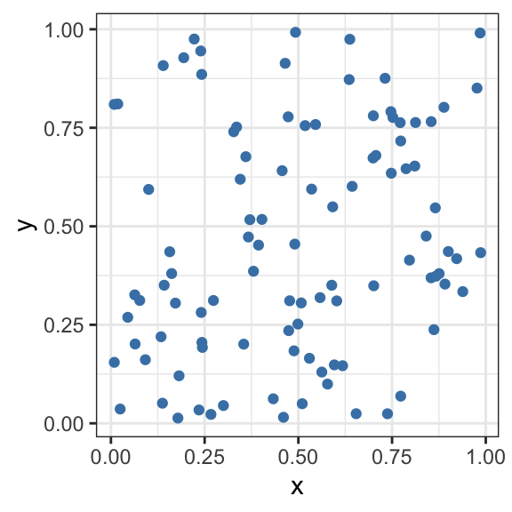
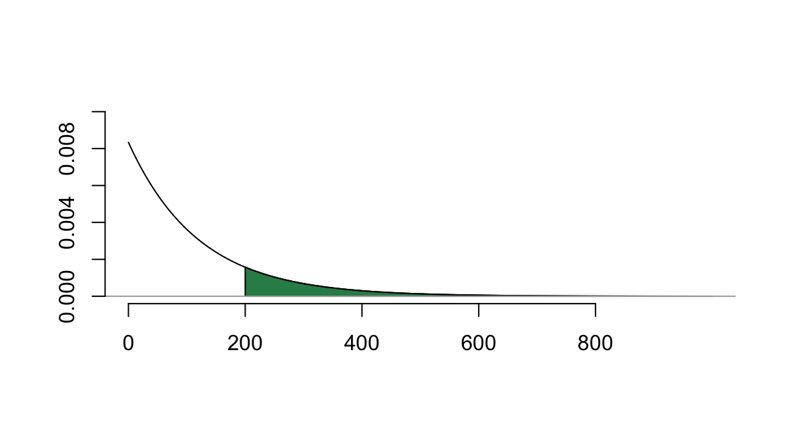

D Continuous Random Variables in R
Here we investigate in R the common, named continuous random variables we encounter in MATH 340:
- Uniform probability distribution |
unif - Normal probability distribution |
norm - Exponential probability distribution |
exp - Gamma probability distribution |
gamma - Chi-square probability distribution |
chisq - Beta probability distribution |
beta
For each of these distributions we may use the 4 associated commands we used in the discrete case:
d___()gives the density functionp___()gives cumulative probabilityq___()gives quantilesr___()gives random samples
We also discuss below how to build and analyze homemade continuous random variables in R.
D.1 Uniform Distribution
The uniform distribution is so very useful, it deserves top-billing here. With it we can generate random numbers, and from it we can build other interesting distributions.
A uniform random variable \(X\) over the interval \([a,b]\) has density function \[f(x) = \frac{1}{b-a}, ~~\text{ for all }~~ a \leq x \leq b.\]
Picking random numbers
## [1] 0.1591900 0.7015577 0.7841069 0.7203860 0.8977723 0.3531635 0.6545967
## [8] 0.9699819 0.5919340 0.6462830Estimate the value of \(\pi\)
points=5000
df <- data.frame(x=runif(points,-1,1),
y=runif(points,-1,1))
df$circle <- ifelse(sqrt(df$x^2+df$y^2)<1,"yes","no")
ggplot(df)+
geom_point(aes(x,y,col=circle),size=.3)+
xlim(c(-1.1,1.1))+ylim(c(-1.1,1.1))+
theme_classic()
The area of the square is 2*2 = 4.
The area of the circle is \(\pi (1)^2 = \pi.\) So the ratio
\[\text{(area of circle)/(area of square)}=\pi/4,\]
and we can estimate \(\pi\) as follows:
\[\pi \approx 4\cdot \frac{\text{points in circle}}{\text{total points}}\]
## [1] 3.1432D.2 Normal Distribution norm
Thanks to the Central Limit Theorem this distribution has a central role in statistics.

Example D.1
Suppose newborn birthweights are normally distributed with mean 7.8 pounds and standard deviation 0.95 pounds.
a) What proportion of newborns weight more than 10 pounds?
b) What proportion of newboard weigh between 7 and 9 pounds? b) Find the birth weight that marks the bottom 1% of all birthweights.
## [1] 0.01028488## [1] 0.6968693## [1] 5.58997Sampling Distribution of a sample mean
Suppose we have a population of 5000 random numbers between 10 and 20, which should have a uniform looking frequency distribution:
 Now suppose we draw a sample of size 50 from this population, and compute the sample mean of these 50 values:
Now suppose we draw a sample of size 50 from this population, and compute the sample mean of these 50 values:
## [1] 14.8684Now let’s repeat this process for 10000 trials, and look at the distribution of the 10000 sample means:
trials=10000
results=c()
for (i in 1:trials){
results=c(results,mean(sample(pop,50)))
}
hist(results,breaks=25, main="Histogram of sample means")Look Normal?
D.3 Exponential Distribution exp
An exponential random variable \(X\) with parameter \(\beta\) has pdf \[f(x) = \frac{1}{\beta}e^{-x/\beta} ~~\text{ for }~~ x > 0\]
The mean of this distribution is \(E(X) = \beta\) and the rate associated to this distribution is \(1/\beta\). In R, we specify the exponential parameter by entering the rate \(1/\beta,\) not \(\beta\) itself.
Suppose \(X\) is \(\texttt{Exp}(b)\). In R, \(P(X \leq q)\) is given by
pexp(q,1/b)
Example D.2 The life of a lightbulb is exponentially distributed with mean 120 hours.
- What is the probability that the lightbulb lasts more than 200 hours?
Here \(X\) is exponential with parameter \(\beta = 120\). The rate associated with this distribution is \(1/120,\) so \(P(X > 200)\) can be computed with
## [1] 0.1888756As a reminder, this probability corresponds to the integral \[\int_{200}^\infty \frac{1}{120}e^{-x/120}~dx\] which corresponds to the shaded area below
- What proportion of lightbulbs last fewer than 5 hours?
## [1] 0.04081054
- Find the 5th percentile for this distribution.
## [1] 6.155195So, 5% of light bulbs last less than 6.16 hours.
Example D.3
Suppose \(X\) is an exponential random variable with parameter \(\beta = 2\). Sketch the density function \(f(x)\) as well as the distribution function \(F(x)\).
The density function is \(f(x) = \frac{1}{2}e^{-x/2}\) for \(x > 0,\) and we can sketch it by plotting an \(x\) vector of many inputs between, say, 0 and 10, and the corresponding values of dexp():
beta=2
df = data.frame(x=seq(0,10,by=.01),f=dexp(seq(0,10,by=.01),1/beta))
ggplot(df)+geom_line(aes(x,f),col="red")+
ggtitle(paste0("density function f(x) of an exp(2) random variable"))+
ylab("f(x)")+xlab("x")+
theme_classic()
The distribution function, which gives cumulative probability is found by plotting pexp():
beta=2
df = data.frame(x=seq(0,10,by=.01),f=pexp(seq(0,10,by=.01),1/beta))
ggplot(df)+geom_line(aes(x,f),col="blue")+
ggtitle(paste0("distribution function F(x) of an exp(2) random variable"))+
ylab("F(x)")+xlab("x")+
theme_classic()A Memoryless distribution
Along with the geometric distribution, the exponential distribution is memoryless in this sense: For any \(t,s>0,\) \[P(X > t + s~|~X > s) = P(X > t).\]
For the geometric distribution we can interpret the above as follows: the probability of waiting more than \(t\) trials to see the first success is the same as waiting more than \(t\) additional trials after not seeing a success in the first \(s\) trials.
For the “lifetime of a light-bulb interpretation” of the exponential distribution: However long the light bulb has already lasted, the probability that the light-bulb lasts at least \(t\) more hours is the same.
We can estimate both \(P(X>t)\) and \(P(X>t+s ~|~ X>s)\) by checking a large random sample from an exponential distribution.
trials=10000
x=rexp(trials,rate=1/5)
s=2; t=3
p1=sum(x > t)/trials #P(X > t)
p2=sum(x[which(x > s)]>s+t)/sum(x>s) #P(X>t+s | X > s)
print(paste("Estimate for P(X>t):",round(p1,3)))## [1] "Estimate for P(X>t): 0.547"## [1] "Estimate for P(X>t+s | X>s): 0.553"D.4 Gamma Distribution gamma
Recall, the gamma probability distribution, \(\texttt{gamma}(\alpha,\beta)\) is a family of skewed right distributions. The parameter \(\alpha\) is sometimes called the shape parameter, \(\beta\) is called the scale parameter, and its reciprocal \(1/\beta\) is called the rate. Figure 10.2 plots 3 different gamma density functions. In R we refer to a gamma distribution in our p_,q_,d_, and r_ functions via the shape parameter \(\alpha\) and either the rate \(1/\beta\) or the scale \(\beta\) parameter. It’s good practice to label the inputs.
Suppose \(X\) is \(\texttt{gamma}(a,b)\). In R \(P(X \leq q)\) is given by
pgamma(q,shape=a,rate=1/b)orpgamma(q,shape=a,scale=b)orpgamma(q,a,1/b)(if you don’t label the two parameters, R assumes (shape,rate)).
Example D.4 Suppose \(X\) has a gamma distribution with parameters \(\alpha=3\) and \(\beta = 4\).
- Find \(P(4 < X < 12)\).
This probability corresponds to the area pictured in Figure D.1, and can be computed in R, remembering to input the shape parameter \(\alpha\) and the rate parameter \(1/\beta\):
## [1] 0.4965085Just about a 50% chance that a random value from a \(\texttt{gamma}(3,4)\) distribution is between 4 and 12.
Figure D.1: Finding P(4<X<12) for a gamma(3,4) distribution
- Gather a random sample of 1000 values from this distribution, and determine what proportion of them live between 4 and 12.
x=rgamma(1000,3,1/4) # random sample of size 1000 (no parameter names <-> shape,rate)
sum(abs(x-8)<4) # values in the sample between 4 and 12## [1] 517Well, 517 is mighty close to half of the 1000 values!
Exponential distributions are special gamma distributions. In particular, if we set \(\alpha=1,\) the gamma distribution gamma(1,\(\beta\)) is exactly equal to the exponential distribution exp(\(\beta\)).
So, if \(X\) is exponential with mean 10, the following commands all compute \(P(X \leq 5)\).
pexp(5,rate=1/10) = 0.3934693
pgamma(5,shape=1,rate=1/10) = 0.3934693
pgamma(5,shape=1,scale=10) = 0.3934693
D.5 Chi-square Distribution chisq
Like the exponential distribution, the chi-square distribution is a special gamma distribution. For a positive integer \(\nu,\) the Chi-square probability distribution with degrees of freedom \(\nu\), denoted \(\chi^2(\nu),\) is the gamma distribution with \(\alpha = \nu/2\) and \(\beta=2\).
In R, pchisq(x,df = v) and pgamma(x,shape = v/2,scale = 2) will return the same value. For example, if \(x = 7\) and \(v = 10,\) we have
pchisq(7,df = 10) = 0.274555, and
pgamma(7,shape = 5,scale = 2) = 0.274555
Here are plots of three different chi-square distributions.
Figure D.2: Three chi-square distributions
D.6 Beta distribution beta
The beta\((\alpha,\beta)\) probability distribution provides a way to model random variables whose possible outcomes are all real numbers between 0 and 1. Such distributions are useful for modeling proportions. As with the gamma and normal distributions, this is a 2-parameter family of distributions.
Example D.5 Let \(X\) denotes the proportion of sales on a particular website that comes from new customers any given day, and suppose from past experience, \(X\) is well-modeled with a beta distribution with shape parameters \(\alpha = 1,\) and \(\beta=3.5\).
Determine the probability that on any given day, over 1/2 the sales come from new customers.
## [1] 0.08838835D.7 Homemade Continuous Random Variables
We may wish to study a continuous random variable \(X\) from a given probability density function such as \(f(x) = \frac{3}{8}(2-x)^2\) for \(0 \leq x \leq 2\).
In this case, probabilities such as \(P(X > 1.2)\) correspond to areas under the density curve, which are calculated by integration, e.g., \[P(X > 1.2) = \int_{1.2}^2 \frac{3}{8}(2-x)^2~dx.\]
If we can find an antiderivative of \(f(x),\) we can find this probability using the fundamental theorem of calculus. If not, we can always estimate the value of the integral with Riemann sums. We do this below.
Visualize the density function
We create a vector of inputs x going from 0 to 2 in small increments (the increment is .01 below), to give us many points over the interval of interest [0,2]. Then we plot the density curve by plotting these x values against the function values f(x). (type="l" gives us a line plot instead of a point plot).

Estimating Integrals with Riemann Sums
We know \(P(X \geq 1.2)\) corresponds to the area under the density curve between 1.2 and 2. We can estimate areas by computing a Riemann Sum (a sum of many thin rectangle areas approximating the area under the density curve).
Here’s a function for estimating \(\int_a^b f(x)~dx\) with a sum of \(n\) rectangle areas, generated using the midpoint rule.
mid_sum=function(f,a,b,n){
#inputs:
#f - function
#a, b - lower and upper bounds of interval
#n - number of subdivisions
#output: The sum of the n rectangle areas whose heights are
# determined by the midpoint rule
dx=(b-a)/n
ticks=seq(a+dx/2,b,dx)
return(sum(f(ticks)*dx))
}For instance, mid_sum(f_pdf,a=0.4,b=1.2,n=4) computes the area of the 4 rectangles in Figure D.3. We divide the interval [0.4,1.2] into n=4 equal-width subintervals, and build rectangles having height equal to the function height at the midpoint of each of these subintervals.
## Warning: Using `size` aesthetic for lines was deprecated in ggplot2 3.4.0.
## ℹ Please use `linewidth` instead.
## This warning is displayed once every 8 hours.
## Call `lifecycle::last_lifecycle_warnings()` to see where this warning was
## generated.Figure D.3: Four midpoint rectangles
The area of the four rectangles is
## [1] 0.447Estimating Probabilities
So, getting back to our example, if we want to estimate \(P(X > 1.2)\) we can compute a midpoint sum - the more rectangles the better. Let’s start with \(n = 100\):
## [1] 0.0639984What if we use \(n = 1000\) rectangles?
## [1] 0.06399998It seems as if our estimate hasn’t changed much by going from 100 to 1000 subintervals, for this density function.
To estimate \(P(0.5 < X < 1.1)\) we can evaluate
## [1] 0.3307493The distribution function \(F(X)\)
Recall, \(F(x)\) gives cumulative probability. In particular, \(F(x) = P(X \leq x)\).
Consider again the random variable \(X\) with pdf \(f(x) = (3/8)(2-x)^2\) for \(0 < x < 2\).
For any value of \(b\) between 0 and 2, \[F(b) = \int_0^b f(x)~dx,\] which we can numerically approximate with
Then we can sketch the graph of the distribution function, for inputs between 0 and 2
x=seq(0,2,by=.01)
y=c()
for (i in 1:length(x)){
y=c(y,F_example(x[i]))
}
plot(x,y,type="l",
main="the distribution function")
Estimating Moments
Recall, \(E(X^n)\) is called the \(n\)th moment about 0 of the distribution. The first moment is the expected value \(E(X),\) and the 2nd and 1st together determine the variance: \(V(X) = E(X^2)-E(X)^2.\)
For a continuous random variable \(X\) with pdf \(f(x),\) \[E(X^n) = \int_{-\infty}^\infty x^n \cdot f(x).\]
In R we can numerically estimate these integrals with the mid_sum() function defined above, applied to the integrand \(x^n\cdot f(X)\).
Expected Value
For a continuous random variable \(X,\) \[E(X)=\int_{-\infty}^{\infty} x \cdot f(x)~dx.\]
To estimate this integral, we plug the first moment integrand \(x \cdot f(x)\) into our Riemann sum function.
## [1] 0.500025Note: The actual expected value is
\[\int_0^2 x \cdot (3/8)(2-x)^2~dx = 0.5.\]
We estimate the variance knowing that \(V(X) = E(X^2)-E(X)^2.\)
## [1] 0.4So the variance of \(X\) is
## [1] 0.149975Note: The actual value of \(E(X^2)\) is \[\int_0^2 x^2 \cdot (3/8)(2-x)^2~dx = 0.4,\] so \(V(X) = 0.4 - (0.5)^2 = 0.15.\)